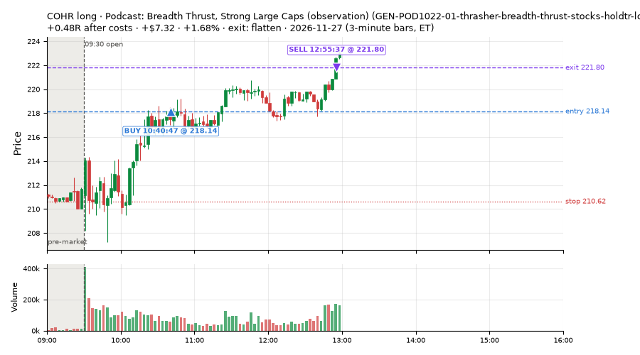
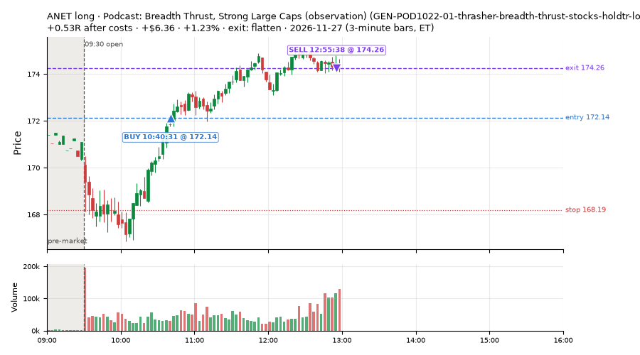
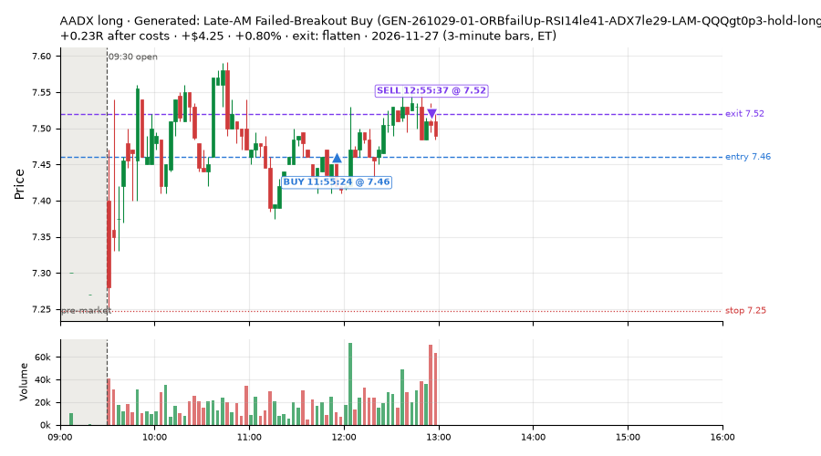
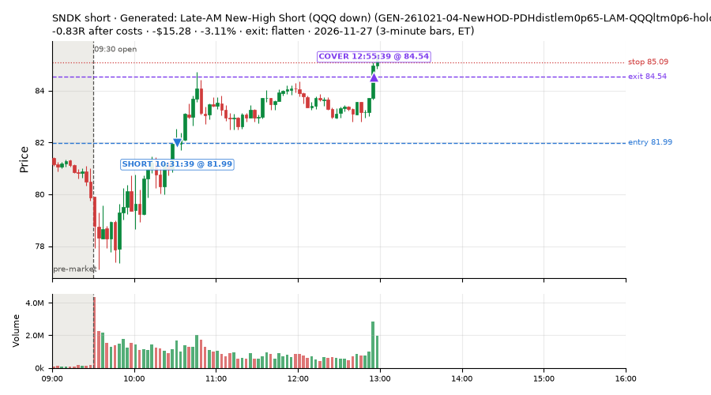
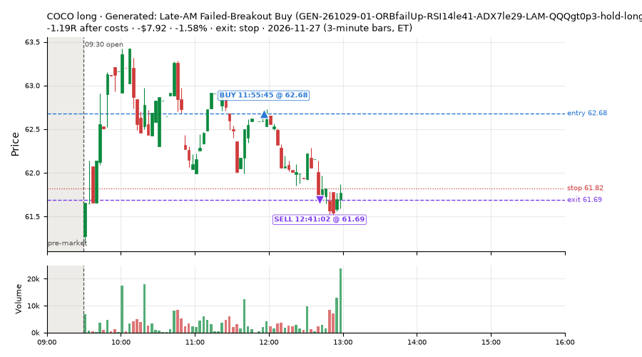
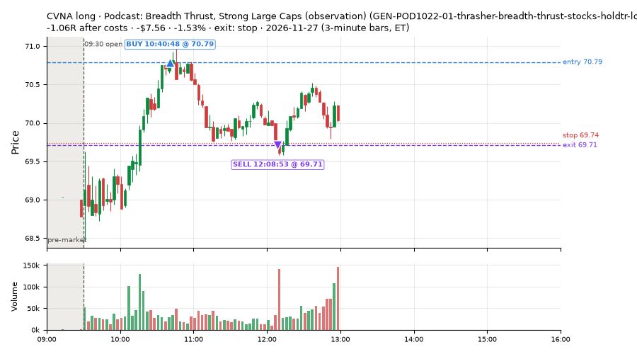
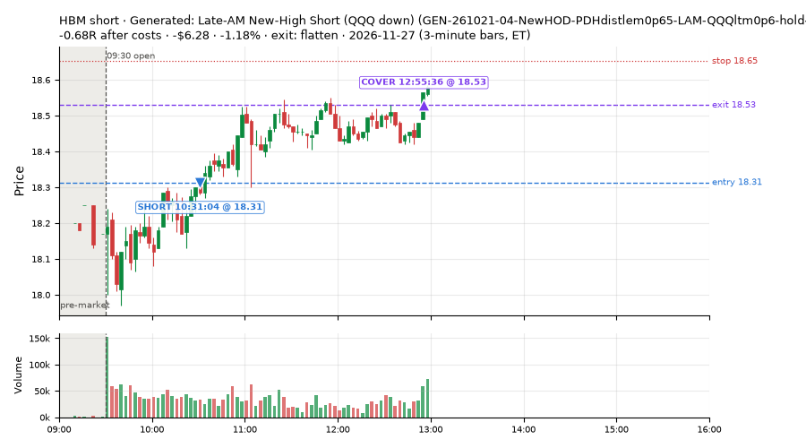
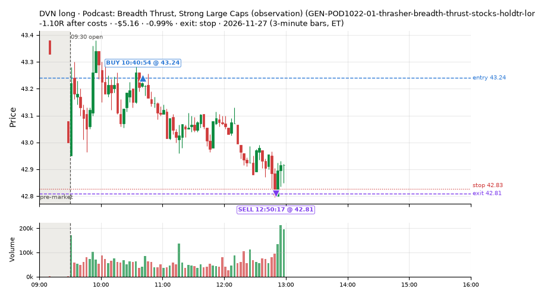

46 trades · win rate 33% · P/L $-58.11
PROBATION: no live setup has passed both locked test periods. 10 owner-directed setups added 2026-10-08 (MarcoFlow top 5 + 5 new), untested live. RW6G1 (RW6 + VWAP band guard) added 2026-10-09, probation.

| Symbol | Setup | Side | In | Out | Entry | Exit | Exit reason | % gained | P/L |
|---|---|---|---|---|---|---|---|---|---|
| COHR | Podcast: Breadth Thrust, Strong Large Caps (observation) (GEN-POD1022-01-thrasher-breadth-thrust-stocks-holdtr-long) | long | 10:40 | 12:55 | 218.14 | 221.80 | flatten | +1.68% | $7.32 |
| ANET | Podcast: Breadth Thrust, Strong Large Caps (observation) (GEN-POD1022-01-thrasher-breadth-thrust-stocks-holdtr-long) | long | 10:40 | 12:55 | 172.14 | 174.26 | flatten | +1.23% | $6.36 |
| AADX | Generated: Late-AM Failed-Breakout Buy (GEN-261029-01-ORBfailUp-RSI14le41-ADX7le29-LAM-QQQgt0p3-hold-long) | long | 11:55 | 12:55 | 7.46 | 7.52 | flatten | +0.80% | $4.25 |
| Symbol | Setup | Side | In | Out | Entry | Exit | Exit reason | % lost | P/L |
|---|---|---|---|---|---|---|---|---|---|
| SNDK | GEN-261021-04-NewHOD-PDHdistlem0p65-LAM-QQQltm0p6-hold-short | short | 10:31 | 12:55 | 81.99 | 84.54 | flatten | -3.11% | $-15.28 |
| COCO | GEN-261029-01-ORBfailUp-RSI14le41-ADX7le29-LAM-QQQgt0p3-hold-long | long | 11:55 | 12:41 | 62.68 | 61.69 | stop | -1.58% | $-7.92 |
| CVNA | GEN-POD1022-01-thrasher-breadth-thrust-stocks-holdtr-long | long | 10:40 | 12:08 | 70.79 | 69.71 | stop | -1.53% | $-7.56 |
| HBM | GEN-261021-04-NewHOD-PDHdistlem0p65-LAM-QQQltm0p6-hold-short | short | 10:31 | 12:55 | 18.31 | 18.53 | flatten | -1.18% | $-6.28 |
| DVN | GEN-POD1022-01-thrasher-breadth-thrust-stocks-holdtr-long | long | 10:40 | 12:50 | 43.24 | 42.81 | stop | -0.99% | $-5.16 |








Signal to fill: median 1s, 90th percentile 3s (46 trades). Bars close each minute; the order follows the bar close.
Best excursion (MFE): median 0.33R; worst (MAE) median 0.56R. 37% of trades never got +0.25R in our favour; 1 reached +1R and still closed at or below 0.
| Symbol | Setup | Best R | Worst R | Closed R |
|---|---|---|---|---|
| COF | GEN-POD1022-01-thrasher-breadth-thrust-stocks-holdtr-long | +0.52 | -1.04 | -1.10 |
| CMCSA | GEN-POD1022-01-thrasher-breadth-thrust-stocks-holdtr-long | +0.34 | -1.29 | -1.14 |
| PBR | GEN-261021-09-RSIslopelem19-ORHdistlem0p73-AM-BRvwgt0p7-t1s1-long | +0.47 | -0.95 | -0.96 |
| VNOM | GEN-261029-01-ORBfailUp-RSI14le41-ADX7le29-LAM-QQQgt0p3-hold-long | +0.20 | -1.02 | -1.15 |
| COCO | GEN-261029-01-ORBfailUp-RSI14le41-ADX7le29-LAM-QQQgt0p3-hold-long | +0.06 | -1.14 | -1.19 |
| Entry time | Trades | Win | Avg R | P/L |
|---|---|---|---|---|
| 10:30-11:30 | 37 | 35% | -0.32 | $-45.56 |
| 11:30-13:00 | 9 | 22% | -0.39 | $-12.55 |
| Setup | Trades | Win | Avg R after costs | Adj R (net of SPY) | Avg R ex-market (all sessions) | P/L |
|---|---|---|---|---|---|---|
| Generated: Late-AM New-High Short (QQQ down) (GEN-261021-04-NewHOD-PDHdistlem0p65-LAM-QQQltm0p6-hold-short) | 3.0 | 0% | -0.55 | -0.30 | +0.17 (beta -0.55, n 95) | $-22.30 |
| Generated: Morning RSI Drop Buy (strong mkt) (GEN-261021-09-RSIslopelem19-ORHdistlem0p73-AM-BRvwgt0p7-t1s1-long) | 4.0 | 25% | -0.42 | -0.46 | -0.28 (beta +2.45, n 16) | $-6.40 |
| Generated: Late-AM Failed-Breakout Buy (GEN-261029-01-ORBfailUp-RSI14le41-ADX7le29-LAM-QQQgt0p3-hold-long) | 8.0 | 25% | -0.42 | -0.36 | -0.01 (beta +0.68, n 129) | $-12.55 |
| Generated: Ret15mATRlem0p16, Flow3lem1 LUNCH long (QQQgt0p3, hold) (GEN-261125-04-Ret15mATRlem0p16-Flow3lem1-PDLdistle0p14-LUNCH-QQQgt0p3-hold-long) | 1.0 | 0% | -0.17 | -0.10 | – | $0.00 |
| Podcast: Breadth Thrust, Strong Large Caps (observation) (GEN-POD1022-01-thrasher-breadth-thrust-stocks-holdtr-long) | 30.0 | 40% | -0.28 | -0.43 | -0.77 (beta +4.69, n 30) | $-16.86 |
Market direction (SPY, beta 1) accounted for $2.62 of today's $-58.11; the rest ($-60.73) came from the setups themselves. Avg R net of SPY: -0.41 (incl. a hedge leg's cost; report only).
25 setups live today. Today: 179 signals, 46 taken, 0 lost because another setup held the symbol (0%). Since 2026-10-19 (29 sessions): 10635 signals, 4572 taken, 283 lost to other setups (3%). Peak open positions today 41 of 300 slots. Earnings blackout removed 138 symbols before scanning.
Simulated playing time (not live): 6038 what-if trades of signals not taken, avg -0.11R, 44% winners; of them 283 lost to another setup (avg -0.04R).
Silent: GEN-261021-08-RSI2le0-Ret15mATRge0p16-ATRdge3p6-LUNCH-QQQgt0p6-holdtr-long
| Prio | Setup | Today sig / taken | Sessions | Signals / taken / trades | Taken/day | Expected/day | Lost to other setups | Lost to (setup n) | Top skip reasons | SIMULATED: not-taken n / avg R / win | Verdict |
|---|---|---|---|---|---|---|---|---|---|---|---|
| 1 | Generated: Late-AM New-High Short (QQQ down) GEN-261021-04-NewHOD-PDHdistlem0p65-LAM-QQQltm0p6-hold-short | 4 / 3 | 27 | 134 / 95 / 95 | 3.52 | – | 0 | – | spread / quote / size 22, not shortable / shorts off 16, broker rejected 1 | 39 / +0.57R / 46% | ok 17.6 entries/week |
| 2 | Generated: Midday Divergence Short (SPY up) GEN-261020-04-MACDhge0p12-BullDiv-MID-SPYgt0p25-t05s1-short | 1 / 0 | 28 | 85 / 9 / 9 | 0.32 | – | 1 | GEN-261028-05-EMAdChgge0p093-ORLdistlem0p42-LAM-QQQgt0p6-holdtr-long 1 | not shortable / shorts off 49, daily loss cap 20, spread / quote / size 4 | 76 / +0.05R / 71% | slow 1.6 entries/week; ~37 weeks to 60 trades |
| 3 | Generated: Morning RSI Drop Buy (strong mkt) GEN-261021-09-RSIslopelem19-ORHdistlem0p73-AM-BRvwgt0p7-t1s1-long | 6 / 4 | 27 | 29 / 16 / 16 | 0.59 | – | 2 | GEN-261023-03-RSI5le13-VWAPatrlem0p34-OPEN-BRvwgt0p6-holdtr-short 1, GEN-261026-05-Ret15mATRge0p042-FromPCATRge0p28-ORHdistlem0p38-OPEN-BRopgt0p5-hold-short 1, GEN-261029-08-Ret15mlem0p36-Flow3lem0p54-RSI14ge65-AM-SPYgt0p5-hold-short 1 | spread / quote / size 8, broker rejected 3, symbol held by another setup 2 | 13 / +0.59R / 85% | slow 3.0 entries/week; ~20 weeks to 60 trades |
| 4 | Podcast: Breadth Thrust, Index ETFs (observation) GEN-POD1022-02-breadth-thrust-index-etf-holdtr-long | 0 / 0 | 24 | 8 / 4 / 4 | 0.17 | – | 0 | – | spread / quote / size 4 | 4 / -1.02R / 0% | slow 0.8 entries/week; ~72 weeks to 60 trades |
| 5 | Generated: Lunch RSI(2) Flush Buy (volatile) GEN-261021-08-RSI2le0-Ret15mATRge0p16-ATRdge3p6-LUNCH-QQQgt0p6-holdtr-long | 0 / 0 | 22 | 0 / 0 / 0 | 0.00 | – | 0 | – | – | 0 / – | silent no signals in 22 session(s); no expected rate on file |
| 6 | Generated: Late-AM Pop Fade (SPY down) GEN-261023-06-RSI7le38-Ret15mge0p54-EMAdiffge0p29-LAM-SPYltm0p25-t1s05-short | 0 / 0 | 25 | 71 / 32 / 32 | 1.28 | – | 2 | GEN-261022-01-ORBfailUp-ATRdge7p9-Eff6ge0p55-AM-SPYdn-hold-long 2 | not shortable / shorts off 18, spread / quote / size 18, symbol held by another setup 2 | 39 / -0.54R / 23% | slow 6.4 entries/week; ~9 weeks to 60 trades |
| 7 | Podcast: Bull Flag Breakout or Bailout (observation) GEN-POD1022-03-wt-bull-flag-bailout-S-long | 0 / 0 | 24 | 9 / 3 / 3 | 0.12 | – | 0 | – | spread / quote / size 4, other 2 | 6 / +0.26R / 83% | slow 0.6 entries/week; ~96 weeks to 60 trades |
| 8 | Generated: Late RSI Drop Short (big bar) GEN-261020-02-RSIslopelem19-BarRngATRge0p14-BuyPressge0p17-LATE-BRvwgt0p7-t05s1-short | 0 / 0 | 23 | 22 / 18 / 18 | 0.78 | – | 0 | – | spread / quote / size 3, broker rejected 1 | 4 / +0.45R / 75% | slow 3.9 entries/week; ~15 weeks to 60 trades |
| 9 | Generated: PM Volatile Dip Buy (strong mkt) GEN-261023-02-Ret15mATRlem0p068-EMAdChgge0p028-ATRdge6-PM-BRopgt0p65-hold-long | 0 / 0 | 20 | 57 / 25 / 25 | 1.25 | – | 0 | – | broker rejected 17, spread / quote / size 13, price through stop/target 1 | 32 / +0.02R / 59% | slow 6.2 entries/week; ~10 weeks to 60 trades |
| 10 | Generated: Late Failed-Breakout Buy (trend) GEN-261022-02-ORBfailUp-EMAdChglem0p094-ADX7ge57-LATE-BRvwgt0p7-t05s1-long | 0 / 0 | 21 | 36 / 13 / 13 | 0.62 | – | 1 | GEN-261022-08-EMAdChglem0p094-Flow3ge1-RVolDayle0p59-AM-SPYgt0p25-holdtr-short 1 | broker rejected 21, symbol held by another setup 1, spread / quote / size 1 | 23 / +0.19R / 78% | slow 3.1 entries/week; ~19 weeks to 60 trades |
| 11 | Podcast: Breadth Thrust, Strong Large Caps (observation) GEN-POD1022-01-thrasher-breadth-thrust-stocks-holdtr-long | 158 / 30 | 19 | 158 / 30 / 30 | 1.58 | – | 0 | – | other 127, spread / quote / size 1 | 128 / -0.06R / 55% | slow 7.9 entries/week; ~8 weeks to 60 trades |
| 12 | Generated: Morning Failed-Breakdown Short GEN-261020-10-BBpctge0p81-ORBfailDn-AM-BRvwlt0p3-hold-short | 0 / 0 | 28 | 452 / 158 / 158 | 5.64 | – | 0 | – | per-setup cap 120, not shortable / shorts off 92, spread / quote / size 76 | 294 / -0.35R / 30% | ok 28.2 entries/week |
| 13 | Generated: Midday Stretched Dip Buy GEN-261020-09-EMAdChgge0p093-Z12lem0p82-VWAPcrossesle0-MID-QQQltm0p3-holdtr-long | 0 / 0 | 28 | 371 / 259 / 259 | 9.25 | – | 16 | GEN-261022-09-Ret15mATRlem0p16-BarRngATRge0p11-ADX7ge64-AM-BRvwlt0p3-hold-short 16 | spread / quote / size 79, symbol held by another setup 16, other 16 | 112 / +0.53R / 72% | ok 46.2 entries/week |
| 14 | Generated: Open Below-Prior-Low Buy (big bar) GEN-261021-02-BarRngATRge0p14-PDLdistlem0p045-OPEN-SPYgt0p5-t1s1-long | 0 / 0 | 25 | 740 / 287 / 287 | 11.48 | – | 7 | GEN-261023-03-RSI5le13-VWAPatrlem0p34-OPEN-BRvwgt0p6-holdtr-short 5, GEN-261027-07-RSI14le35-FromOpenge2-AM-BRvwlt0p5-t1s1-short 1, GEN-261029-09-RangeExpge1p6-Since950ATRlem0p43-OPEN-BRvwgt0p5-hold-short 1 | spread / quote / size 202, per-setup cap 161, other 80 | 453 / -0.06R / 51% | ok 57.4 entries/week |
| 15 | Generated: Late-AM Failed-Breakout Buy GEN-261029-01-ORBfailUp-RSI14le41-ADX7le29-LAM-QQQgt0p3-hold-long | 9 / 8 | 21 | 396 / 129 / 129 | 6.14 | – | 6 | GEN-261029-08-Ret15mlem0p36-Flow3lem0p54-RSI14ge65-AM-SPYgt0p5-hold-short 3, GEN-261022-08-EMAdChglem0p094-Flow3ge1-RVolDayle0p59-AM-SPYgt0p25-holdtr-short 2, GEN-261022-07-Z12lem1p9-FlowShiftlem0p96-ATRdge3p6-AM-BRopgt0p5-t1s1-short 1 | broker rejected 137, daily loss cap 75, spread / quote / size 49 | 267 / -0.22R / 40% | ok 30.7 entries/week |
| 16 | Generated: RSI2le15 OPEN long (QQQgt0p6, t1s1) GEN-261125-01-RSI2le15-Gaplem2-Since950ATRge0p44-OPEN-QQQgt0p6-t1s1-long | 0 / 0 | 1 | 0 / 0 / 0 | 0.00 | – | 0 | – | – | 0 / – | quiet - wait no signals in 1 session(s); too early to tell |
| 17 | Generated: UpWickge0p71 MID long (BRvwlt0p5, t1s05) GEN-261125-02-UpWickge0p71-Slope6ge0p03-PDLdistlem0p59-MID-BRvwlt0p5-t1s05-long | 0 / 0 | 1 | 0 / 0 / 0 | 0.00 | – | 0 | – | – | 0 / – | quiet - wait no signals in 1 session(s); too early to tell |
| 18 | Generated: RangeExpge1p9 LATE long (BRopgt0p65, t1s1) GEN-261125-03-RangeExpge1p9-Slope6lem0p043-LATE-BRopgt0p65-t1s1-long | 0 / 0 | 1 | 0 / 0 / 0 | 0.00 | – | 0 | – | – | 0 / – | quiet - wait no signals in 1 session(s); too early to tell |
| 19 | Generated: Ret15mATRlem0p16, Flow3lem1 LUNCH long (QQQgt0p3, hold) GEN-261125-04-Ret15mATRlem0p16-Flow3lem1-PDLdistle0p14-LUNCH-QQQgt0p3-hold-long | 1 / 1 | 1 | 1 / 1 / 1 | 1.00 | – | 0 | – | – | 0 / – | slow 5.0 entries/week; ~12 weeks to 60 trades |
| 20 | Generated: RSI2ge100 LAM long (SPYgt0p5, holdtr) GEN-261125-05-RSI2ge100-PDLdistlem0p043-SMA20slopelem0p45-LAM-SPYgt0p5-holdtr-long | 0 / 0 | 1 | 0 / 0 / 0 | 0.00 | – | 0 | – | – | 0 / – | quiet - wait no signals in 1 session(s); too early to tell |
| 21 | Generated: MACDhge0p12, BearDiv LATE short (BRvwgt0p7, t1s1) GEN-261125-06-MACDhge0p12-BearDiv-PDHdistlem0p39-LATE-BRvwgt0p7-t1s1-short | 0 / 0 | 1 | 0 / 0 / 0 | 0.00 | – | 0 | – | – | 0 / – | quiet - wait no signals in 1 session(s); too early to tell |
| 22 | Generated: Flow3ge1, MACDhlem0p078 LUNCH short (QQQltm0p6, holdtr) GEN-261125-07-Flow3ge1-MACDhlem0p078-Since950ATRlem0p25-LUNCH-QQQltm0p6-holdtr-short | 0 / 0 | 1 | 0 / 0 / 0 | 0.00 | – | 0 | – | – | 0 / – | quiet - wait no signals in 1 session(s); too early to tell |
| 23 | Generated: MACDhlem0p12, BarRngATRge0p18 LAM short (BRvwlt0p3, holdtr) GEN-261125-08-MACDhlem0p12-BarRngATRge0p18-ADX7ge57-LAM-BRvwlt0p3-holdtr-short | 0 / 0 | 1 | 0 / 0 / 0 | 0.00 | – | 0 | – | – | 0 / – | quiet - wait no signals in 1 session(s); too early to tell |
| 24 | Generated: NewLOD MID short (SPYdn, t1s1) GEN-261125-09-NewLOD-Gaplem2-FromOpenlem2-MID-SPYdn-t1s1-short | 0 / 0 | 1 | 0 / 0 / 0 | 0.00 | – | 0 | – | – | 0 / – | quiet - wait no signals in 1 session(s); too early to tell |
| 25 | Generated: ORBfailUp PM long (QQQgt0p3, holdtr) GEN-261125-10-ORBfailUp-VWAPatrge0p25-PM-QQQgt0p3-holdtr-long | 0 / 0 | 1 | 0 / 0 / 0 | 0.00 | – | 0 | – | – | 0 / – | quiet - wait no signals in 1 session(s); too early to tell |
Every trade is attached as a CSV you can open and edit in Excel or Google Sheets. Live page: https://misiti15.github.io/MCF/live/